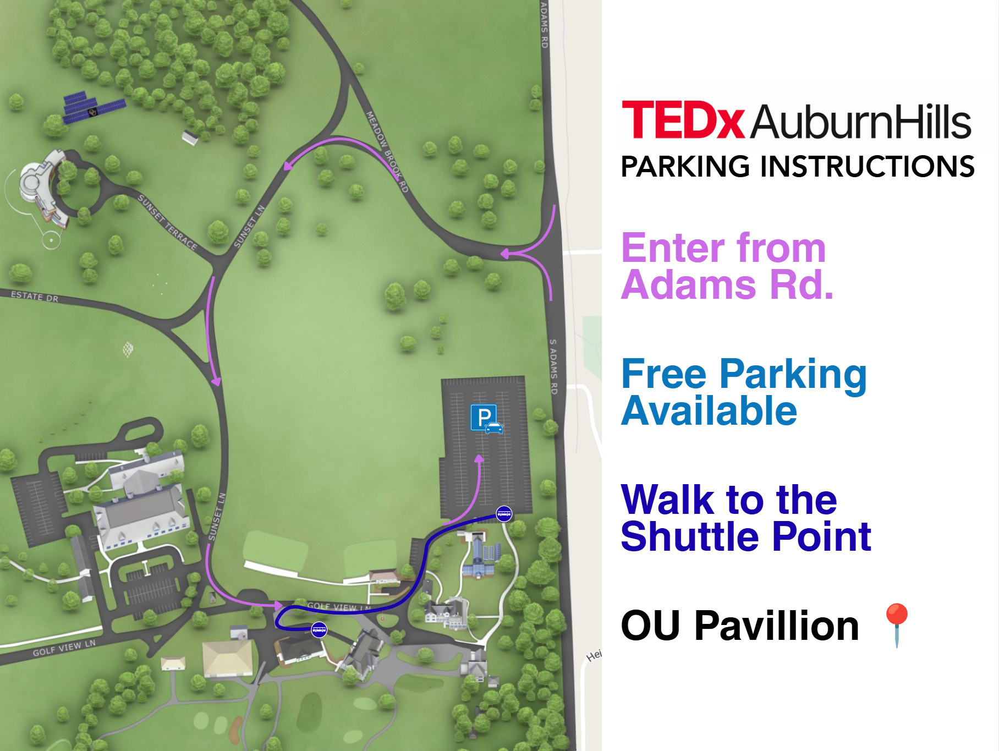

{kind=link}
Accessibility
Live captions will be provided for Deaf and hard-of-hearing audience members.
Register for the room, bring an idea to the stage, or watch the free livestream.
Enter from Adams Road, follow the marked route to free parking, then walk to the shuttle point for transportation to the OU Pavilion.

Select the map to open it at full size. The original-quality image can also be saved with the download button.
Admission includes entry to the full in-person program and is limited to 100 guests. Food and drinks will be available for purchase during the event.
Reserve your seat through the official attendee sign-up form. Registration is free, with an optional donation available to participants.
Sign up nowThe in-person event will be livestreamed for an online audience at no charge.
The mainstage talks and performances will also be recorded for the TED Media Uploader and eventual publication through TEDx channels, subject to TEDx review and publishing requirements.
Explore the venue area, zoom the map, or open turn-by-turn directions before you leave.
Live captions will be provided for Deaf and hard-of-hearing audience members.
Food and drinks will be available for purchase at the event, including during the 11:45 a.m.–12:35 p.m. intermission.
Please arrive during the check-in window so everyone can be seated before the program begins at 10:00 a.m. The event ends at 3:00 p.m., and everyone must leave by 5:00 p.m.